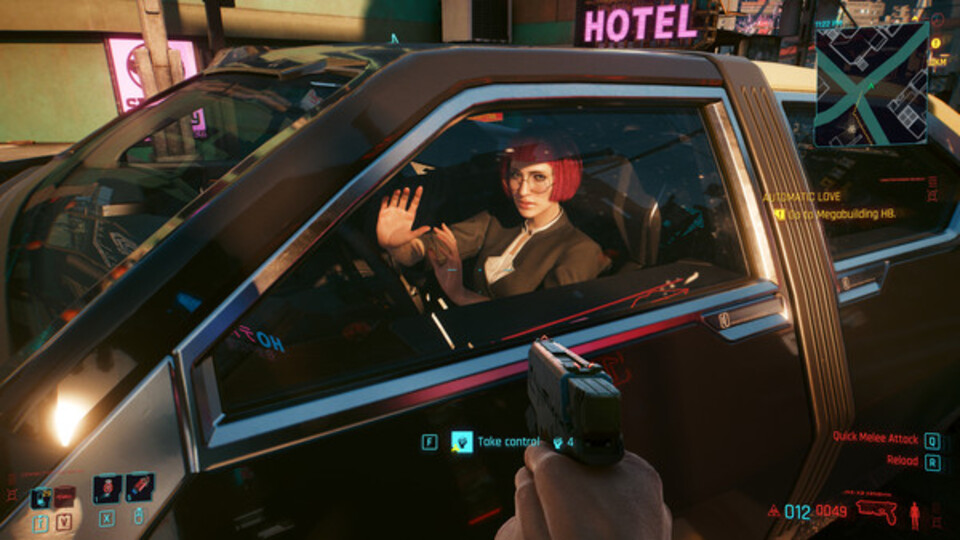
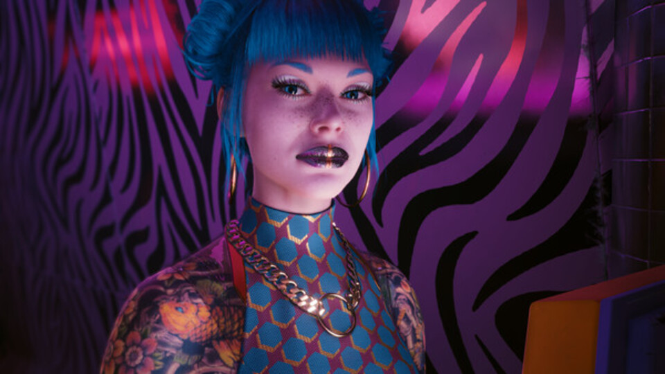
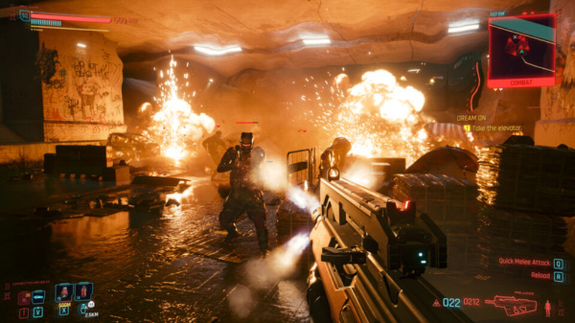
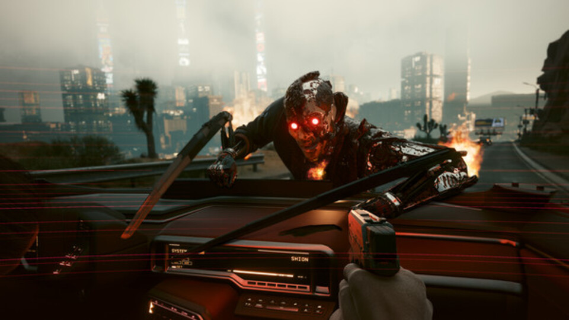
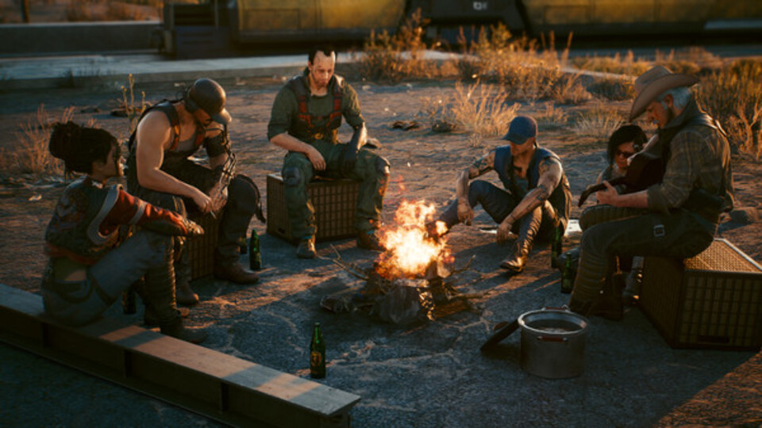
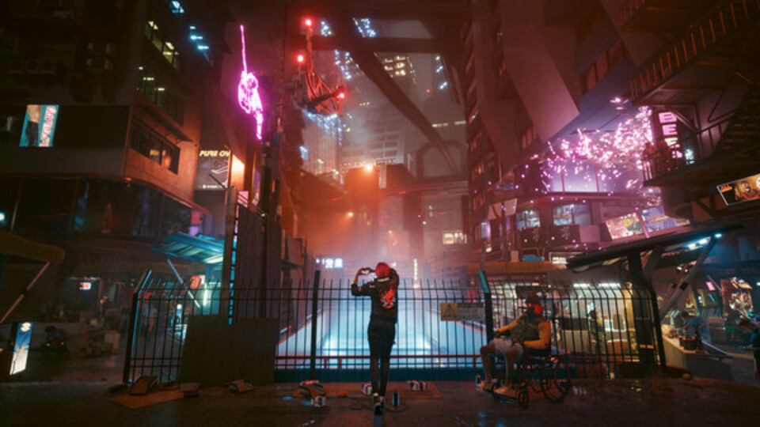
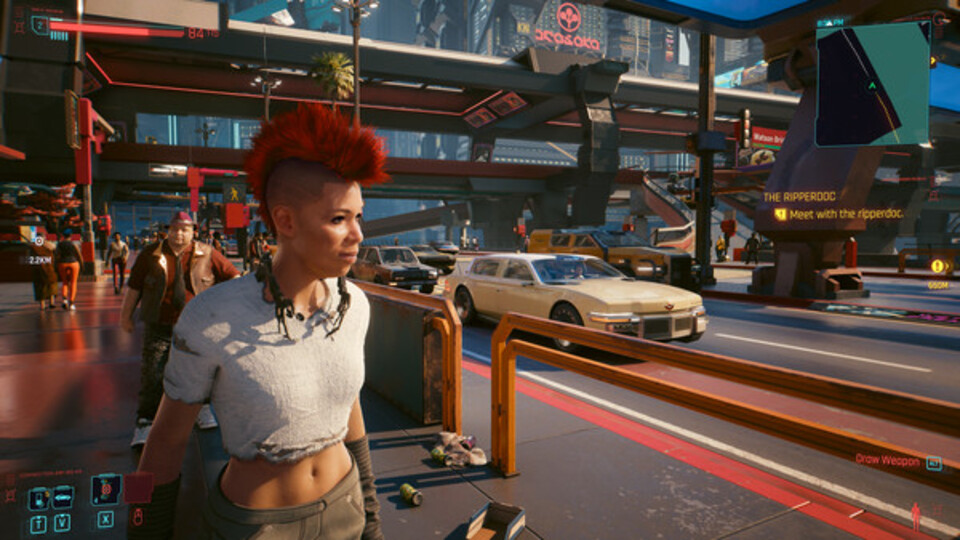
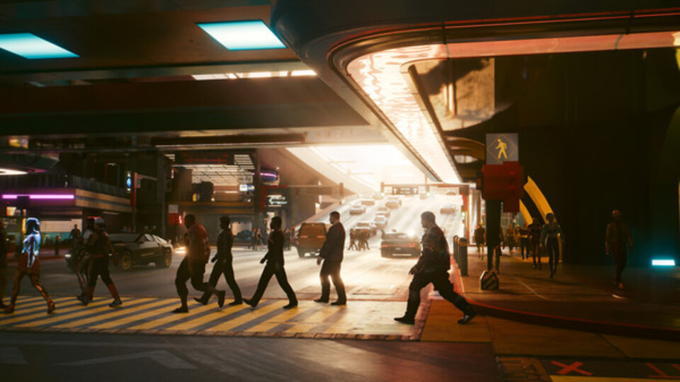

- Cyberpunk
- $10.000
Cyberpunk 2077 es un RPG de aventura y acción de mundo abierto ambientado en el futuro sombrío de Night City, una peligrosa megalópolis obsesionada con el poder, el glamur y las incesantes modificaciones corporales.








Cyberpunk 2077.
Cyberpunk 2077 es un RPG de aventura y acción de mundo abierto ambientado en la megalópolis de Night City, donde te pondrás en la piel de un mercenario o una mercenaria ciberpunk y vivirás su lucha a vida o muerte por la supervivencia. Mejorado y con contenido nuevo adicional gratuito. Personaliza tu personaje y tu estilo de juego a medida que aceptas trabajos, te labras una reputación y desbloqueas mejoras. Las relaciones que forjes y las decisiones que tomes darán forma al mundo que te rodea. Aquí nacen las leyendas. ¿Cuál será la tuya?REQUISITOS DEL SISTEMA
Minimo
-
SO:
Windows 10
-
Procesador:
Intel Core i5-3570K or AMD FX-8310
-
Memoria:
8 GB de RAM
-
Graficos:
NVIDIA GeForce GTX 970 or AMD Radeon RX 470
-
DirectX:
Versión 12
-
Almacenamiento
70 GB de espacio disponible
Maximo
-
SO:
Windows 10/11
-
Procesador:
Intel Core i7-4790 or AMD Ryzen 3 3200G
-
Memoria:
12 GB de RAM
-
Graficos:
GTX 1060 6GB / GTX 1660 Super or Radeon RX 590
-
DirectX:
Versión 12
-
Almacenamiento
70 GB de espacio disponible